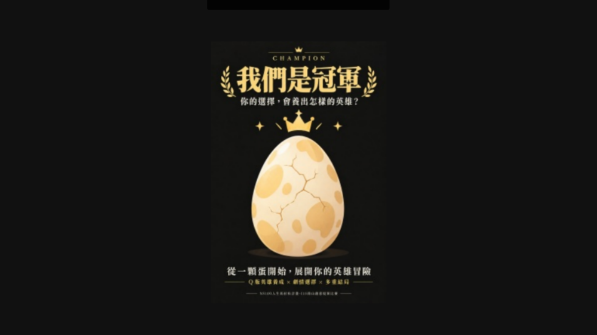
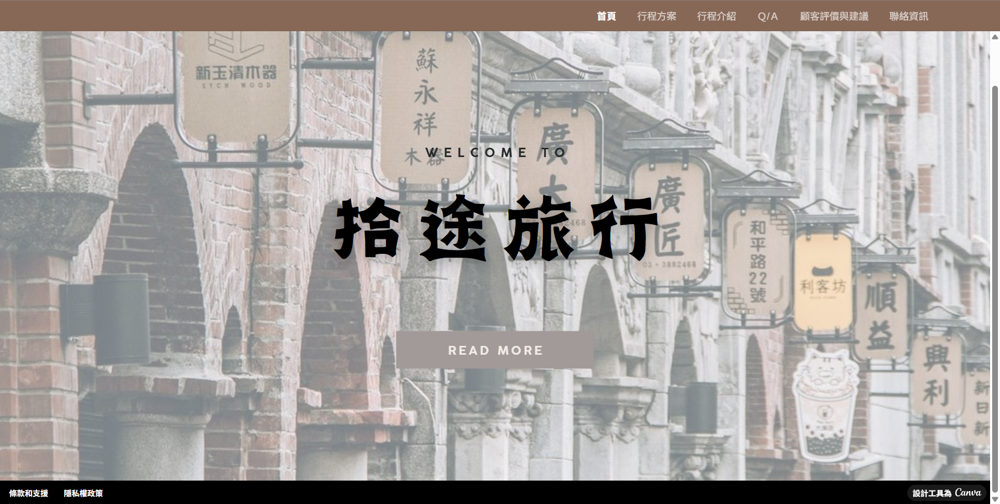
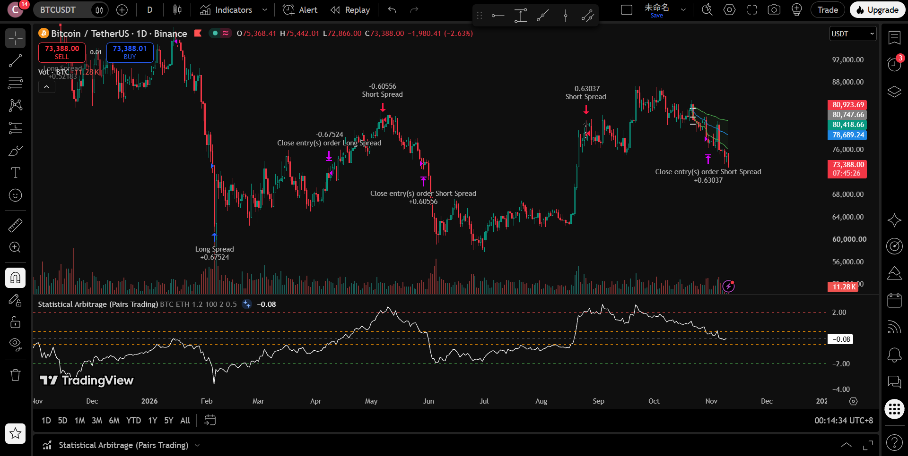

[南山人壽作品圖]
COMPETITION

南山人壽創意提案比賽
參賽者 / 系統流程規劃
在此競賽中，我們需要發揮創意設計一個宣傳南山人壽相關資訊的產品。我們選擇以一個遊玩時長約10分中的角色扮演遊戲呈現。在過程中我學到了如何從零開始架設一個可以實際運作的宣傳類型專案，以及如何與組員協調使報告時能夠同時呈現我們的創作理念與符合委託者的需求。
查看更多 ↗你好，我是 Chen You Chun，目前就讀於中原大學資管系並輔修財金系。我的學習重心放在網頁前端與 Python 開發，優勢在於跨領域整合，並能妥善運用多種工具解決專案問題。善用財經概念有助於提升專案價值，未來我將持續精進技術，做出更多好用的數位作品。
查看課程作品 ↘無論是從熟悉的音樂圈跨足體育社團，或是在各式各樣的分組專題中，我都能快速進入狀況，並找到與他人順利合作的方法。因為從小學習音樂，我曾在聯合管樂團維持長期的高強度練習並參與大型演出，這不僅培養了我對熱愛事物的毅力，也讓我非常享受與團隊一起達成目標的過程。
此外，從高中的小組報告到擔任衛生糾察的公共服務經驗，讓我深刻體會到溝通與協調的重要性；我不僅學會了如何更有效率地統整大家的意見，也懂得了在不同情境下的人際應對進退。我期許自己能帶著這些跨領域嘗試與團隊合作的經驗，穩紮穩打地迎接未來的每一次挑戰。
在學中。以系統開發、資料庫管理、程式設計為主軸，並輔修財務分析與量化投資觀念。

參賽者 / 系統流程規劃
在此競賽中，我們需要發揮創意設計一個宣傳南山人壽相關資訊的產品。我們選擇以一個遊玩時長約10分中的角色扮演遊戲呈現。在過程中我學到了如何從零開始架設一個可以實際運作的宣傳類型專案，以及如何與組員協調使報告時能夠同時呈現我們的創作理念與符合委託者的需求。
查看更多 ↗
專案開發 / 前端設計實作
這是我在企業概論課程中的專案實作，此專案我們扮演一間桃園在地的旅行社，並且需要推出對應的旅遊專案。在這門課中，我負責製作桃園一日遊的宣傳網頁，我從中學到了如何安排各分頁的照片與文字內容，並將其整合成一個觀感上簡單且舒適的網頁，來讓瀏覽者用最短的時間了解旅行社提供的方案及其他旅遊資訊與景點特色。
查看網頁 ↗
獨立開發 / 策略設計與回測
這是我結合程式能力與財金知識的獨立專題。我運用 Python 撰寫自動化腳本，設計選股策略與技術指標條件，並透過finlab等平台使用歷史數據進行模型回測與績效評估。這次經驗讓我熟悉了資料爬取與api連結的使用技巧，也讓我更了解如何以程式化邏輯來驗證投資策略的可行性。
查看更多 ↗